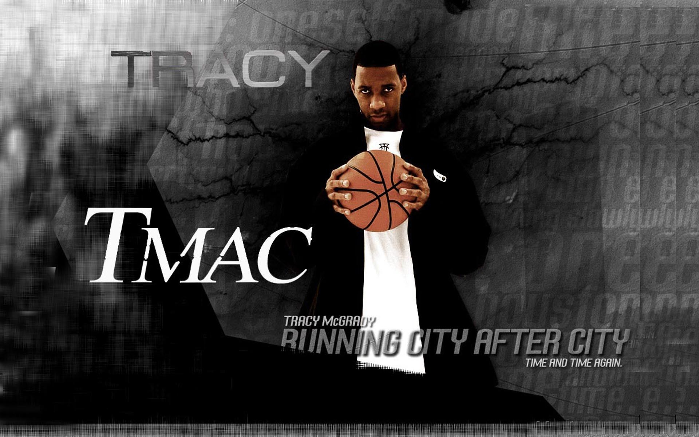
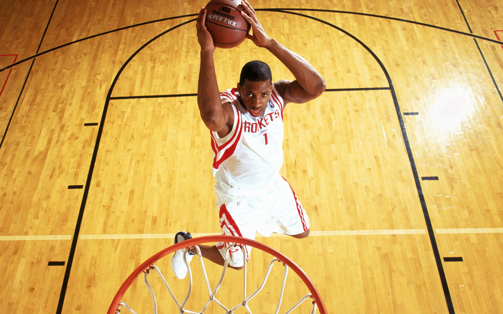

简介
2004年12月9日（北京时间2004年12月10日），在休斯顿丰田中心球场，惊现不可思议的大逆转，麦迪竟然在35秒内得到13分！全场1.6万名休斯顿球迷有幸见证了火箭主场逆转马刺，麦迪在比赛最后时刻，分别在35秒时一个三分，24.3秒时一个三加一（三分加一个罚球)，11.2秒时一个三分，及最后1.7秒时一个三分绝杀，火箭神奇般的以81-80，1分优势战胜马刺。
麦迪时刻经典回顾：
从此，“麦迪时刻”（T-Mac’s time）诞生，麦迪被称为是感动上帝的男人。此次比赛也永远载入NBA史册。

麦迪时刻详细经过
1、终场52秒，麦迪突破上篮不中，姚明抢到篮板直接空中补扣中的，拉开了火箭队反击的序幕。(74-66)
2、帕吉特断下帕克给邓肯的传球，扣篮得手。(74-68)
3、马刺暂停，后麦迪犯规由布朗两罚全中；麦迪开始了他的表演，麦迪时刻降临，他全场运球后镇定自若的投中了他匪夷所思的第一记三分球！(76-71)
4、苏拉犯规，布朗继续两罚全中；麦迪运球至前场，利用姚明的挡拆绕过鲍文，再假动作骗起邓肯，顺势投篮，球不可思议地再次命中3分，并加罚命中！(78-75)
5、帕吉特向邓肯犯规，后者也两罚全中。火箭暂停后，麦迪困难的接到巴蒂尔的传球，运球至三分线外面对紧逼的鲍文再次飚中三分！(80-78)
6、马刺暂停，布朗接球后运球，并于底线附近姚明面前卧倒，麦迪迅速拣下球，持球狂奔，在终场前一秒外线再次三分命中！进球后的麦迪挥拳怒吼！ (80-81)
7、尾声：托尼·帕克飞奔前场一记不着边际的大号三分，功臣麦迪被众人压在身下。
8、德文·布朗神情发呆，就是因为他最后的运球失误，成就了伟大的麦迪时刻！
9、观众吼叫…
赛后言论
波波维奇：“你眼睁睁地看着他把刀子捅进你心窝，可你根本对此无能为力。”
麦迪：“提前退场的观众，你们错过了一场伟大的比赛。”
火箭后卫苏拉：“我们得以第一手地感受到他之所以是这个世界上最伟大球员之一的原因，他竟然将我们从那样的绝境中拉了出来，真是神奇，令人难以置信。”
火箭队首发位置的鲍恩也表示：“太狂野了，看着麦迪那样将球送进篮圈真是奇妙的感觉，他投中了一两个后我们开始想‘我们是否能将比分追近点？’也许当时每个人都是那样想的：‘至少我们能让比赛看上去不那么难看。’但麦迪有不同的想法，他想为我们赢得胜利，这真是神奇。”
波波维奇恼羞成怒地回答道：“我怎么知道为什么会这样?!麦迪的手太烫了，他是个出色的家伙，想让比赛结局变成这样，他们必须做到很多事才行(他们竟然做到了)。我们最后时刻有许多糟糕的表现，但麦迪的表现也确实伟大。”
麦迪赛后回忆道：“老兄，老实说我以前还真的没试过这种事，我当时怎么想的？我想的是‘别放弃，我只需要把球投出去，当他们开球的时候争取把球断下来。如果断不下再用犯规战术让他们上。“
麦迪赛后采访
采访：T-Mac，多么艰难，你逆转了比赛，你得到了13分，在刚刚过去的45秒内，当时是怎么回事？
麦迪：这很难做到，一切皆有可能，我们一直坚信，就是像这样，我们就是这样试着去创造奇迹，在最后我们来回4个回合，我不知道我是怎么面对对方防守队员运球穿插其间，你知道，我的意志很坚定，就像龙卷风一样席卷赛场。
采访：你们在最后1分钟内做了2次战术犯规，当你面对邓肯打了4分时，你是否觉得，我们可以赢下这场比赛？”
麦迪：这就是我们的关键，当我打了4分时，信心又来了，然后队友通过一切机会在狭小的空间把球传给我，我就准备好了向前冲。
采访：但是你们仍然落后很多，他们拿有球权，他们最后底线发球，你是怎么拿到球的，你怎么想？
麦迪：嗯，我们利用他们的分心，他们仍拿着球，但他滑倒了，球向我滚来，我当时唯一做的就是拿起球，我不想打成平局，所以我仍然持球过来，投出了三分球，球就进了，你要原谅我不知所云，我也是碰到第一次这样的情况。
采访：可以去看回放，但这就是你为什么是NBA的得分王。
麦迪：我很感激我们做到了。
特雷西·麦克格雷迪简介

在1997年NBA选秀大会中，麦迪以高中生球员的身份，在第1轮第9顺位被多伦多猛龙队选中。职业生涯曾先后效力于多伦多猛龙队、奥兰多魔术队、休斯敦火箭队、纽约尼克斯队、底特律活塞队、亚特兰大老鹰队、CBA青岛双星队及圣安东尼奥马刺队。在16年的职业生涯中，麦克格雷迪2次荣膺NBA得分王，7次入选NBA全明星阵容，2次入选NBA最佳阵容一阵，3次入选NBA最佳阵容二阵，2次入选NBA最佳阵容三阵，2001年荣获NBA进步最快球员奖。
2013年8月26日，麦克格雷迪正式宣布退役。2017年4月2日，麦克格雷迪正式入选2017年奈·史密斯篮球名人纪念堂 。
 支付宝打赏
支付宝打赏
 微信打赏
微信打赏
赞赏一下